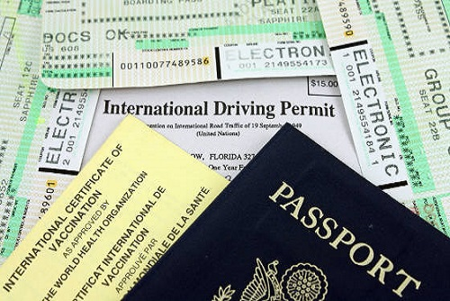
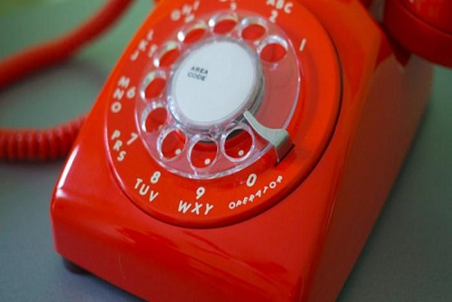
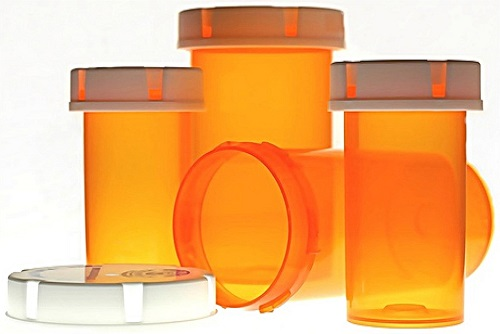
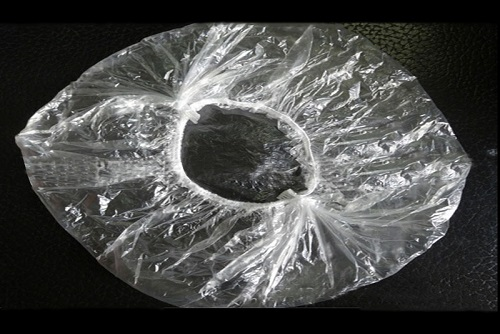
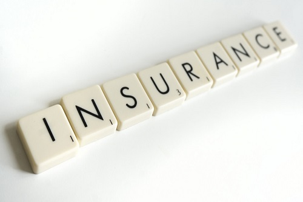

When traveling, pick up a postcard to commemorate your trip. Address the postcard to yourself and mail from your destination. Include notes about when you went, why, things you loved or will remember the most. When you return home, you will either have a postcard waiting on you or one will arrive soon. These will bring a smile to your face for years to come.
Having travel documents close at hand is always important and can help make replacing them in an emergency an easier process. Keep a photo of your itinerary, ID, Passport, medical card and any other travel docs you have on your phone. Having a picture of the documents on your phones allows you to have them with you at all times without carrying around paper.

Create a contact in your phone for the US Embassy in all the foreign cites you plan to visit. Include both the number and the address. In case of an emergency you will have this information easily accessible. Having the both the number and address is important incase cell service is not accessible.

Save empty medicine bottles as they make great cases when traveling. Fill with vitamins for example and avoid taking each individual bottle in your bag. The nice small size takes up very little space in your carryon bag.

Pickup inexpensive shower caps and use them to cover the bottom of your shoes when packing. This keeps the bottom of shoes separated from clean clothing. If you end up with dirty shoes you are able to cover and pack them without having dirt or mud all over you bag.

Purchase Travel Insurance especially for big trips. Travel Insurance is relatively inexpensive compared to the overall cost of a trip. If you can’t afford to be out the total cost of your trip should something happen then definitely consider an investment in travel insurance.
